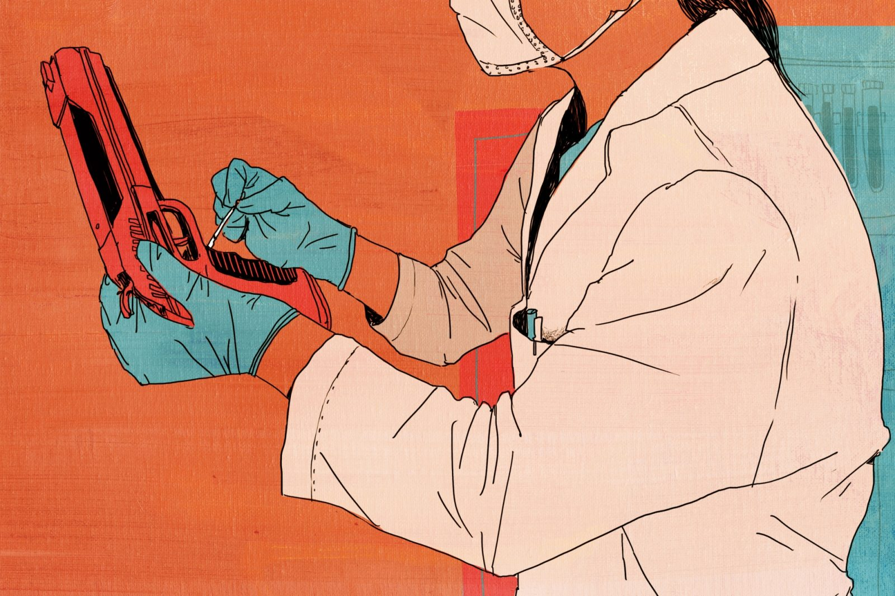

Mayer Herskovic’s recent conviction for a violent assault in 2013 relied heavily on DNA evidence analyzed by the New York City medical examiner’s office, using methods that are now disputed. (Demetrius Freeman for ProPublica)
This story was co-published with The New York Times.
Over the past decade, the DNA laboratory in the office of New York City’s chief medical examiner emerged as a pioneer in analyzing the most complicated evidence from crime scenes. It developed two techniques, which went beyond standard practice at the FBI and other public labs, for making identifications from DNA samples that were tiny or that contained a mix of more than one person’s genetic material.
As its reputation spread, the lab processed DNA evidence supplied not only by the New York police, but also by about 50 jurisdictions as far away as Bozeman, Montana, and Floresville, Texas, which paid the lab $1,100 per sample.
Now these DNA analysis methods are under the microscope, with scientists questioning their validity, ProPublica has found. In court testimony, a former lab official said she was fired for criticizing one method, and a former member of the New York State Commission on Forensic Science said he had been wrong when he approved their use. The first expert witness allowed by a judge to examine the software source code behind one technique recently concluded that its accuracy “should be seriously questioned.”
Earlier this year, the lab shelved the two methods and replaced them with newer, more broadly used technology.
A coalition of defense lawyers is asking the New York State inspector general’s office — the designated watchdog for the state’s crime labs — to launch an inquiry into the use of the disputed analysis methods in thousands of criminal cases. While the inspector general has no jurisdiction over the court system, any finding of flaws with the DNA analysis could prompt an avalanche of litigation. Previous convictions could be revisited if the flawed evidence can be shown to have made a difference in the outcome.
The medical examiner’s office “has engaged in negligent conduct that undermines the integrity of its forensic DNA testing and analysis,” the Legal Aid Society and the Federal Defenders of New York wrote the inspector general on Friday. Because the lab has kept problems with its “unreliable” testing and “unsound statistical evidence” secret from the public and the courts, they continued, “innocent people may be wrongly convicted, and people guilty of serious crimes may go free.”
In addition to those convicted using the disputed methods, many defendants may have chosen to plead guilty when they learned prosecutors had DNA evidence against them. Their cases face significant barriers to reconsideration.
The medical examiner’s office stands by its science. Its chief of laboratories, Timothy Kupferschmid, said that the discarded techniques were well-tested and valid, and that the lab was adopting newer methods to align with changing FBI standards. He compared it to a vehicle upgrade.
“So just because we’re switching to the new model, I mean, our old pickup truck worked great, but my new pickup truck is so much better,” he said.
One case that hinges on the disputed DNA techniques stemmed from the beating of Taj Patterson in December 2013. A group of Hasidic men attacked Patterson, a black student, in the Williamsburg section of Brooklyn. Prosecutors blamed the attack on the Shomrim, a Hasidic group that patrols Williamsburg, a neighborhood where tensions between Orthodox Jews and blacks have long simmered.
Six days after the attack, the police found one of Patterson’s black Air Jordan sneakers on a nearby roof.
The police sent the sneaker to the DNA lab, where a technician swabbed a 3-inch by 6-inch area of its heel — and recovered 97.9 picograms of DNA from at least two people. A picogram is one trillionth of a gram.
picogram
gram
The sample bore Patterson’s DNA. Using software developed in-house, the lab calculated that it was 133 times more likely than not that the remainder belonged to Mayer Herskovic, a young father who lived and worked in Williamsburg and had no criminal record.
“I don’t believe that this is DNA,” Herskovic told ProPublica. “A mixture, like you take milk, orange juice and water and you mix it, what is it? Is it still milk? Is it still orange juice? I don’t know.”
“DNA is the magic word,” he added. “If you throw it into a trial, they eat it up. For me, it’s not magic at all.”
No other physical evidence linked Herskovic to the attack on Patterson, who was blinded in his right eye. Neither the victim nor those who witnessed the crime identified Herskovic at trial, nor was he seen on surveillance video. Herskovic said he has never been part of the Shomrim, and deplored the assault on Patterson.
Nevertheless, he was convicted by a judge of gang assault, and sentenced this past March to four years in prison. He is appealing.
Three years ago, Barry Scheck, a co-founder of the Innocence Project, a nonprofit that uses DNA evidence to exonerate wrongly convicted prisoners, yelled at his colleagues on the state forensic commission about the potential perils of the DNA work at the city’s lab.
“The day of reckoning is going to come,” Scheck told his fellow commissioners, some of whom rolled their eyes, a video of the meeting showed. “Someday people are going to review this,” he continued. “It’s an Ebola. It is a cancer here that could be spreading. We are all on notice.”
For three decades, forensic DNA evidence has been a valuable tool in criminal investigations, incriminating or exonerating suspects. Matching a defendant’s genetic material with a sample found on a weapon or at a crime scene has proved extremely persuasive with judges and juries.
But not all DNA evidence is equal. Sometimes it’s clear: blood or semen identifies a single person. If it’s just a few skin cells left on an object, or if it contains more than one person’s genetic material, it can be more ambiguous. In such situations, labs used to report that the results were inconclusive, or the defendant could not be excluded from the mix.
New types of DNA analysis have been introduced in recent years to interpret trace amounts or complex mixtures, spawning an industry of testing tools, chemical kits and software. As analysis has become more complex, the techniques and results are coming under fire nationwide.
In the past three years, flaws in DNA methods have temporarily shut down testing in public crime labs in Austin, Texas, and Washington, D.C. Lab analysts “make it seem like it’s a completely objective process,” said Bicka Barlow, a lawyer in California with a master’s degree in genetics and molecular biology. “But I’m 100 percent convinced that there are many people who are incarcerated who were convicted with DNA evidence who are innocent.”
The two techniques that New York’s lab introduced were the “high-sensitivity testing” of trace DNA amounts, and the Forensic Statistical Tool, or FST, in which software calculates the likelihood that a suspect’s genetic material is present in a complicated mixture of several people’s DNA. By its own estimate, the lab has used high-sensitivity DNA testing to analyze evidence samples in 3,450 cases over the past 11 years, and FST in 1,350 cases over the past six. Cases in which both methods were used may be counted in both totals.
In February 2012, responding to a 911 call about gunshots near East Tremont Avenue, police officers from the 45th Precinct in the Bronx saw a passer-by make a motion as if he was dropping an object under a parked car.
His was a familiar face: Johnny Morgan, who had been arrested 75 times. The police found a .40-caliber Glock 23 beneath the car. Morgan was charged with gun possession, based both on DNA evidence and witness testimony. But the amount of DNA recovered from the gun was extremely small; the lab initially said it was unsuitable for testing.
After the prosecutor and the police requested a high-sensitivity test, analysts said Morgan’s DNA was a match. He was convicted.
Public crime labs assessing DNA evidence, including the FBI’s lab, “amplify,” or copy, the material 28 times to conduct their analysis. Under the high-sensitivity testing method developed by Theresa Caragine, a forensic scientist, and implemented in 2006, New York’s lab began to push very small amounts through three more cycles, bringing the total to 31. This approach provided more material to look at — as much as eight times the standard approach. But, like turning up the volume on a radio, those additional cycles amplified small imperfections from missing or contaminated DNA.
To reduce potential problems, the lab decided not to amplify samples smaller than 20 picograms, or about three cells’ worth of DNA, its then-director, Mechthild Prinz, said in 2005 during the state’s approval process for the test. She declined to comment for this article.
“The scientific community has been asked to test more and more evidence with less and less amounts of DNA,” Prinz explained in 2009 to the DNA Subcommittee of the state forensic science commission, which approves all forensic methods used in New York State.
“A couple of years ago, DNA testing was limited to body fluids — semen, blood and saliva. Now every laboratory in the country routinely receives swabs from guns,” other weapons, burglary tools and cash registers, she said.
After several years of high-sensitivity testing of small amounts of DNA, the lab developed a second method: a piece of software to interpret complex mixtures.
Invented by Caragine and Adele Mitchell, a geneticist with a specialty in statistics who joined the lab in 2008, the Forensic Statistical Tool, or FST, considers the overall amount of DNA in the mixture, how many people are in it, how much information is probably missing or contaminated, and the frequency with which each piece of DNA appears in different racial or ethnic groups. Then it compares the defendant’s DNA profile to the mixture, and calculates a likelihood ratio, which it expresses as a single number.
The bigger that number — and it’s sometimes in the millions or even trillions — the more likely that the defendant’s DNA is present. Caragine and Mitchell testified in 2012 that about a third of all test results were favorable to defendants, by indicating that their DNA was probably absent.
Only a small proportion of cases using the Forensic Statistical Tool went to trial. Most defendants faced with unfavorable FST results pleaded guilty, defense lawyers say. “Just the prospect of those numbers going in front of the jury could really warp the plea bargaining process,” said Brad Maurer, a lawyer and DNA specialist at New York County Defender Services.
Eric Rosenbaum, an assistant district attorney and head of the DNA Prosecutions Unit in Queens, described FST as an “extremely powerful tool because it is devastating in court.”
In December 2012, The New York Times profiled Mitchell and Caragine in the article “ Helping Decide Guilt or Innocence,” which described their fruitful collaboration, but also hinted at a brewing controversy. The Legal Aid Society was gearing up for an extensive fight against admission of FST results in court.
One interested reader was Eli Shapiro, the former mitochondrial DNA technical leader in the DNA lab. One reason for his early retirement, he later testified, was the stress over having to sign off on lab reports generated by the software. Even in the lab, few people knew the science behind it.
Shapiro later said in court that he found the FST process described in the article “very disturbing.” He reached out to his former boss and colleagues to express his alarm. “They were not concerned,” he testified.
So, in early 2013, Shapiro offered his help to Legal Aid, which had just formed a unit specializing in DNA evidence. Under a judge’s order, the lab had given Legal Aid the results of its validation studies — internal tests of FST’s accuracy. Shapiro helped decipher the data.
“He knows the math,” said Clinton Hughes, a Legal Aid lawyer. “For relaxation, he does long division on the beach with a pencil.”
From 2012 to 2014, a hearing in Brooklyn before Judge Mark Dwyer focused on DNA evidence in two cases: it had been recovered from the handlebars of a bicycle after a shooting, and from the clothing of a sexual assault victim. With the help of testimony from Shapiro and some of the world’s most renowned DNA experts, Legal Aid hoped to persuade the judge to throw out the evidence.
The defense experts were denied access to FST’s software code, which would later come under scrutiny. Instead, they criticized the way that Caragine and Mitchell designed and tested FST.
Bruce Budowle, an architect of the FBI’s national DNA database, testified that New York’s statistical methods were “not defensible.”
He said that FST was designed with the incorrect assumption that every DNA mixture of the same size was missing information or had been contaminated in just the same way. He also criticized the lab’s overreliance on “pristine” saliva and samples to test its methods, which do not mirror the ways real crime-scene evidence is degraded by time and weather. The lab underestimated the challenges, he testified.
“Five-person mixtures can look like three-person,” he said, “four contributors can look like two-person mixtures. It’s almost impossible to actually be accurate.”
The software’s inventors acknowledged a margin of error of 30 percent in their method of quantifying the amount of DNA in a sample, a key input into the FST calculation. They acknowledged that FST didn’t consider that different people in a mixture, especially family members, might share DNA.
In April 2013, weeks after testifying, Caragine was forced to resign from the lab after New York’s inspector general found that she had violated protocol by changing her colleagues’ FST results in two cases. Her defense was that she was correcting their mistakes. Mitchell left in 2014. Caragine declined to comment for this article, and Mitchell did not respond to repeated requests for comment.
Perhaps the most dramatic testimony in the hearing came from Ranajit Chakraborty, who had developed the FBI’s policy on DNA in the 1990s and, as a member of New York’s DNA Subcommittee, voted to approve both high-sensitivity testing in 2005 and FST in 2010. What he had since learned about FST bothered him.
“What would your vote be today?” Jessica Goldthwaite, a lawyer for Legal Aid, asked Chakraborty on the stand.
“My answer would be no,” he said. In November 2014, Judge Dwyer sided with the defense, excluding evidence produced by both high-sensitivity testing and FST. He was the first state judge to do so, and so far the only one.
Appointed to the state forensic science commission when it formed in 1994, Scheck didn’t vote for either of the lab’s methods. His misgivings grew when he learned that the DNA sample used to convict Morgan in the Bronx gun case was only 14.15 picograms. That was below the 20-picogram minimum for high-sensitivity testing the lab had promised to set during its approval process back in 2005.
At the October 2014 commission meeting, Scheck pounded the table as he proposed to compel the lab to turn over any validation studies it had conducted for high-sensitivity testing of especially small samples. He accused lab officials of not having performed the necessary studies, despite their assurances otherwise. While Scheck’s motion failed, it drew a vote from an unexpected supporter: Marina Stajic, who then worked for the medical examiner’s office as the director of the toxicology lab. She supported the motion, she later testified, because she believed that the DNA lab should be transparent with its data.
Her boss, Dr. Barbara Sampson, the chief medical examiner, heard about Stajic’s vote the next morning. She expressed her anger in an email to a colleague,
Mimi Mairs, then a lawyer for the DNA lab, emailed,
A spokeswoman for the medical examiner’s office declined to comment on the correspondence, as did the Manhattan district attorney’s office, where Mairs is now a prosecutor.
In April 2015, Dr. Sampson and Kupferschmid fired Stajic, who had worked at the lab for 29 years. Kupferschmid then called a commission member to inquire whether Stajic would also be removed from the oversight group, according to court documents.
In February 2016, Stajic sued Dr. Sampson, Kupferschmid and the city for allegedly violating her First Amendment rights. The defendants’ lawyer contends Stajic can’t prove why she was fired, and that her vote wasn’t constitutionally protected speech. Her case is pending.
Michael Hirshon for ProPublica
The case that finally revealed FST’s source code began with a few drops of cooking oil.
Kevin Johnson and his ex-girlfriend Octaviea Martin shared custody of two sons, and he sometimes stayed over in her Bronx apartment. One night in April 2015, he was cooking cheeseburgers when some oil spilled. He and Martin argued about cleaning it up.
Her daughter got upset and called 911, telling the dispatcher that Johnson was pointing a gun at Martin. A police search of the apartment turned up two socks wedged between the refrigerator and the wall. In one sock was a black pistol; in the other, a silver revolver.
Johnson, who had been convicted on a previous weapons charge, was arrested.
The lab found that one gun contained two people’s DNA; by FST’s calculation, it was 156 times more likely than not to contain Johnson’s DNA. The second gun had three people’s DNA and a formidable likelihood of 66 million.
Hoping to cast doubt on the DNA results, his lawyers, Christopher Flood and Sylvie Levine, asked for the FST source code, which other lawyers had sought in vain.
Again, the government refused to hand it over on the grounds that it was a “proprietary and copyrighted” statistical tool owned by the City of New York.
The federal judge granted the defense access to the FST code in June 2016 under an order that bars wider disclosure. (The medical examiner’s office denied ProPublica’s public records request for the code, citing its “sensitive nature.”)
Nathaniel Adams, a computer scientist and an engineer at a private forensics consulting firm in Ohio, reviewed the code for the defense. He found that the program dropped valuable data from its calculations, in ways that users wouldn’t necessarily be aware of, but that could unpredictably affect the likelihood assigned to the defendant’s DNA being in the mixture.
“I did not leave with the impression that FST was developed by an experienced software development team,” Adams wrote in an affidavit. Pending more rigorous testing, “the correctness of the behavior of the FST software should be seriously questioned.” Characterizing Adams’ criticisms as merely stylistic rather than substantive, the lab told ProPublica that FST provided reliable calculations.
Technology consultants wrote the software code for FST, according to a spokeswoman at the medical examiner’s office. Few, if anyone, at the lab or on the state’s DNA Subcommittee had the expertise to double-check the software, said a scientist in the lab who worked on the techniques who asked to remain anonymous for fear of career repercussions. “We don’t know what’s going on in that black box, and that is a legitimate question,” the scientist said, adding that evidence in older cases should “absolutely” be retested in light of growing questions about FST. “As a scientist, I can’t say no.”
The U.S. attorney’s office withdrew the DNA evidence against Johnson days before the hearing about its admissibility was scheduled to begin.
Nevertheless, Johnson pleaded guilty this past May. On Aug. 28, he was sentenced to 28 months in prison, almost all of which he has already served. His lawyers declined to make him available for an interview.
As Johnson’s case proceeded, the lab circulated a memo to clients in September 2016, notifying them that it would replace both high-sensitivity testing and FST on Jan. 1. A new chemical kit would make the additional amplification cycles of the high-sensitivity method unnecessary. The lab would retire FST in favor of STRmix, a commercially available and FBI-endorsed software program for DNA mixtures that dozens of public labs use.
The medical examiner’s office “is fully committed to staying on the cutting edge of new technology to best serve the City of New York,” Kupferschmid wrote in the memo. He added that the lab would raise the minimum sample size for testing to 37.5 picograms — almost twice the initial floor of 20 picograms.
The change in policy is scant consolation to those who were convicted based on the discarded DNA techniques, like Mayer Herskovic. After the gang attack on Patterson, two confidential informants gave Herskovic’s name to a police detective. Herskovic was then arrested and swabbed for DNA. Neither informant testified against him at trial.
Sitting at a table in his apartment in Williamsburg, Herskovic discussed the DNA evidence, first calmly and then indignantly. The white walls were bare except for a small mirror, a clock and a portrait of his children, who were scribbling in coloring books on the kitchen floor. He recalled how, when the police asked him to give a DNA sample, his lawyer cautioned him not to, but Herskovic went ahead and did so.
“I was the first one to give DNA,” Herskovic said. “He told me they needed it, I said, ‘Go ahead, take it! It will be better.’”
The DNA on Patterson’s sneaker was pivotal to the case against Herskovic. Patterson testified that whoever pulled off his shoe had punched and kicked him. Although four other suspects were arrested, and several other men were identified by witnesses, seen on surveillance video, or had their license plates photographed at the scene, only Herskovic has been tried or sentenced to prison. Two people pleaded guilty to misdemeanors and were given probation; charges were dropped against the other two.
Herskovic’s four-year sentence was stayed pending appeal. He’s working at an hourly job for a heating, ventilating and air-conditioning company to support his wife and two young children. His appeals lawyer, Donna Aldea, plans to argue that FST was never tested on a population as insulated as the Hasidic Jews of Williamsburg, who very likely share many of the same ancestors, and therefore much of the same DNA.
“This case is a poster-child for how ‘DNA evidence’ can literally be fabricated out of thin air, and how statistics can be manipulated to create a false impression of ‘scientific evidence’ of guilt,” Aldea said. “This must be exposed.”
Coded by: Kamilah Udomsap